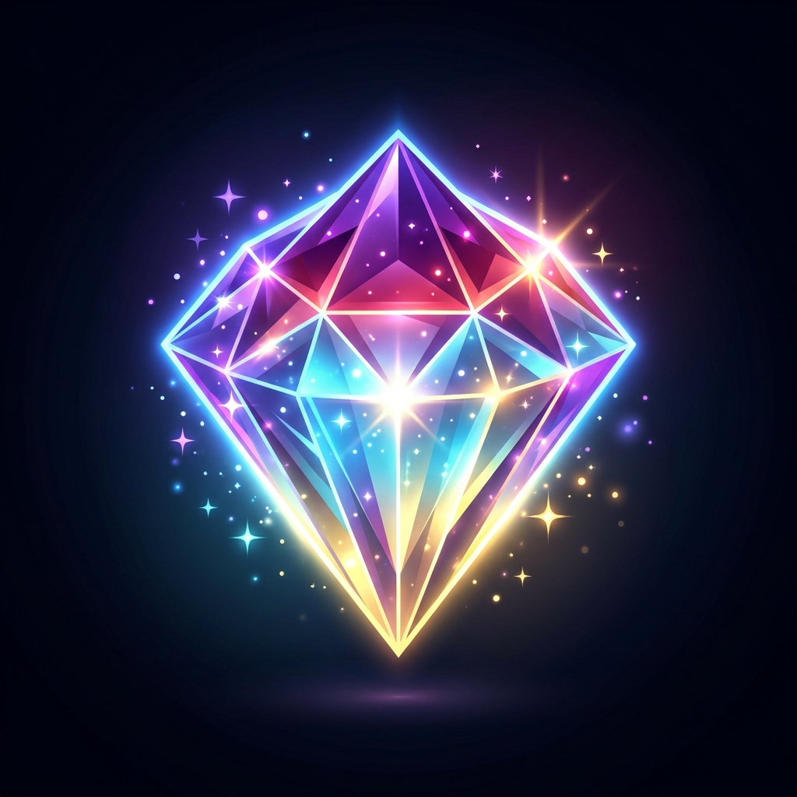

Sprite Master▶ Kéo thả sprite sheet hoặc bấm để nạp ảnh ◀
[ Tự động bóc tách Pixel • Xuất Asset Unity / Godot / Phaser ]
Tải sprite sheet lên và công cụ sẽ tự tìm từng sprite, sau đó nhóm sprite thành các hàng để bạn lọc và chọn.
Cắt sheet thành từng sprite riêng, kéo chọn hình chữ nhật và loại trừ những vùng không mong muốn.
Kẻ viền sprite hình dạng bất định bằng đa giác, di chuyển các đỉnh và chỉ xuất các pixel nằm trong hình.
Tải một sprite dưới dạng PNG hoặc nhiều sprite dưới dạng ZIP chứa các tệp PNG trong suốt.
Xem trước từng sprite đã cắt, đổi tên sprite, hoàn tác hoặc làm lại trước khi tải xuống.
Công cụ xuất ảnh PNG trong suốt chuẩn, nên sprite có thể nhập làm asset trong Unity, Godot, Phaser hay bất kỳ engine nào đọc được tệp PNG.
Cắt và tải sprite xuống hoàn toàn miễn phí, không cần đăng nhập.